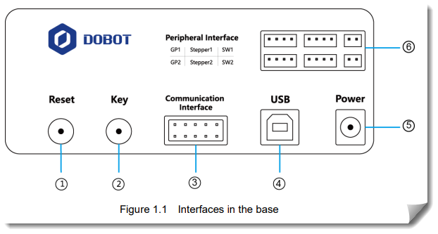
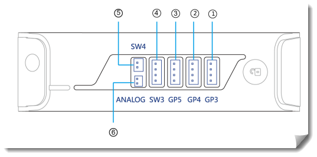

Einleitung
Diese Seite beschreibt die wichtigsten Kommunikationsschnittstellen des Dobot Magician und ordnet sie für den Einsatz in AG ein.
Ziel ist nicht nur die Bedienung des Roboters, sondern auch das Verständnis, welche Verbindung sich für welchen Anwendungsfall eignet.
vorhandene Schnittstellen im Überblick
Dobot nennt in den aktuellen Spezifikationen als Kommunikation USB / Wi-Fi / Bluetooth und beschreibt
außerdem 13 Interface-Ports für Erweiterungen und Second Development.
Im Interface-Dokument wird der Anschluss auf der Rückseite zusätzlich als I/O interface / UART interface beschrieben,
der z. B. für Bluetooth, Wi-Fi usw. genutzt wird und das Dobot-Protokoll verwendet.

| Anschluss | Funktion |
|---|---|
| SW1 | steuerbarer 12-V-Ausgang, z. B. Luftpumpe |
| SW2 | steuerbarer 12-V-Ausgang |
| Stepper1 | Schrittmotoranschluss, auch Extruder im 3D-Druck-Modus |
| Stepper2 | weiterer Schrittmotoranschluss |
| GP1 | allgemeiner Signalanschluss, z. B. Pumpe, Farbsensor, Infrarotsensor |
| GP2 | allgemeiner frei nutzbarer Anschluss |
Erweiterungsanschlüsse am Vorderarm

Am Arm selbst sitzen weitere Anschlüsse:
| Anschluss | Funktion |
|---|---|
| GP3 | Endeffektor, R-Achsen-Servo, allgemeiner Anschluss |
| GP4 | Auto-Leveling / allgemeiner Anschluss |
| GP5 | Signal für Lasergravur / allgemeiner Anschluss |
| SW3 | Hot-End beim 3D-Druck, steuerbarer 12-V-Ausgang |
| SW4 | Lüfter / Laser-Stromversorgung, steuerbarer 12-V-Ausgang |
| ANALOG | Thermistoranschluss beim 3D-Druck |
Diese Anschlüsse sitzen laut Dobot-Interfacebeschreibung am Vorderarm und sind teilweise mehrfach belegt, je nachdem ob man z. B. Greifer, Laser oder 3D-Druck verwendet.
Serielle Schnittstelle
Die serielle Kommunikation ist eine robuste und einfach nachvollziehbare Basis. Kommandos werden als Datenpakete zwischen Rechner und Roboter ausgetauscht.
- Sehr gut geeignet für erste Tests und Fehlersuche.
- Direkte Verbindung mit klarer Struktur und wenig Störquellen.
- Häufig die Grundlage für Steuerung per Python-Skripten.
Praxis: Für den Einstieg zuerst Bewegungsbefehle mit kleinen Wegen testen, dann Schritt für Schritt komplexere Abläufe aufbauen.
Bluetooth
Bluetooth eignet sich für kurze Distanzen und mobile Szenarien, bei denen kein Kabel im Weg sein soll.
- Flexibler Aufbau auf engem Raum.
- Schnelles Verbinden mit passenden Endgeräten.
- Typisch für Demonstrationen und portable Aufbauten.
Im Unterricht sollte vorab klar sein, welches Gerät die Verbindung aufbaut und wie mit Verbindungsabbrüchen umgegangen wird.
WLAN
WLAN ist sinnvoll, wenn der Roboter in ein Netzwerk eingebunden werden soll, zum Beispiel für Fernsteuerung, Monitoring oder Datenaustausch.
- Gute Reichweite innerhalb des Schulnetzwerks.
- Möglichkeit zur Integration mehrerer Systeme.
- Geeignet für Projekte mit Weboberflächen und IoT-Bezug.
Wichtig: Netzwerkregeln, Zugangsdaten und Sicherheitsaspekte sollten vorab mit der Schul-IT abgestimmt werden.
USB
USB ist in vielen Szenarien die schnellste und stabilste Verbindung zwischen Rechner und Dobot Magician.
- Sehr stabil bei Dauerbetrieb und längeren Programmsitzungen.
- Einfache Inbetriebnahme mit DobotStudio.
- Ideal für Unterricht mit reproduzierbaren Ergebnissen.
Bei mehreren Arbeitsplätzen ist eine saubere Kabelführung sinnvoll, damit keine mechanischen Behinderungen entstehen.
Vergleich der Schnittstellen
| Schnittstelle | Reichweite | Stabilität | Typischer Einsatz |
|---|---|---|---|
| Seriell | Kurz bis mittel (kabelgebunden) | Hoch | Debugging, Grundlagen, Python-Tests |
| Bluetooth | Kurz | Mittel | Mobile Vorführung, drahtlose Steuerung |
| WLAN | Mittel bis hoch | Mittel bis hoch (netzabhängig) | Netzwerkprojekte, Fernzugriff, IoT |
| USB | Kurz (kabelgebunden) | Sehr hoch | Unterrichtsbetrieb, DobotStudio, stabile Steuerung |
Links
- Dobot Magician Spezifikationen
- Dobot Magician Interface Dokument
- Keine relevanten Links mehr gefunden.